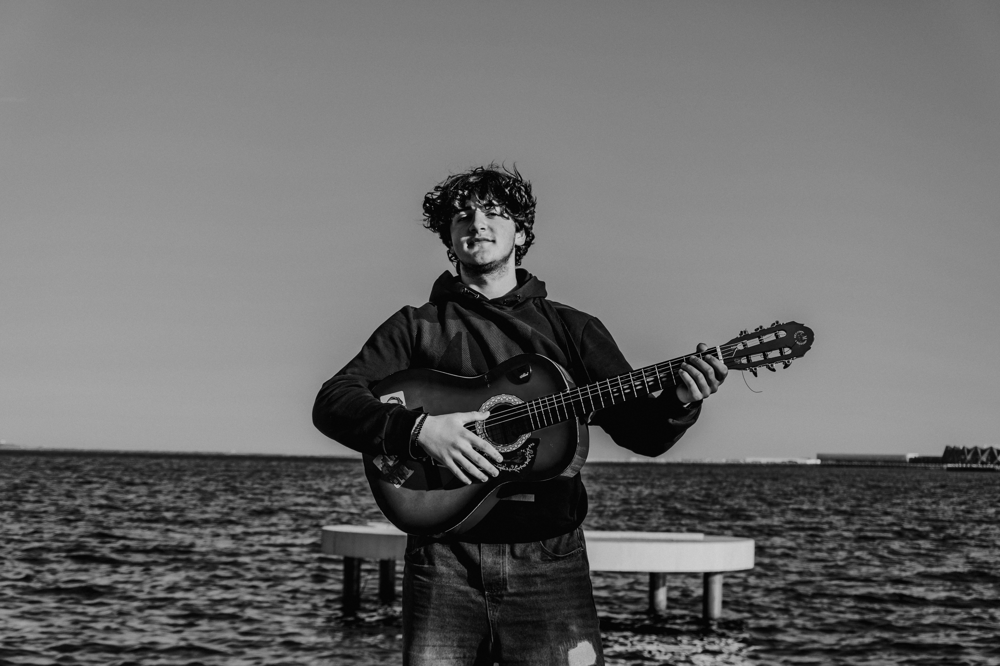

Paradox Freestyle, Sommerhus, 3 VISE MENN, ST. PETER, DOVNE DRAG, SKARPE PIANO, GOD & GAMMEL, 1877, VIS MEG DIN VERDEN, BIPOLAR, La Boheme, SAVNER ET MENNESKE, RØDT HVITT BLÅTT, SAMMEN og Frida Kahlo